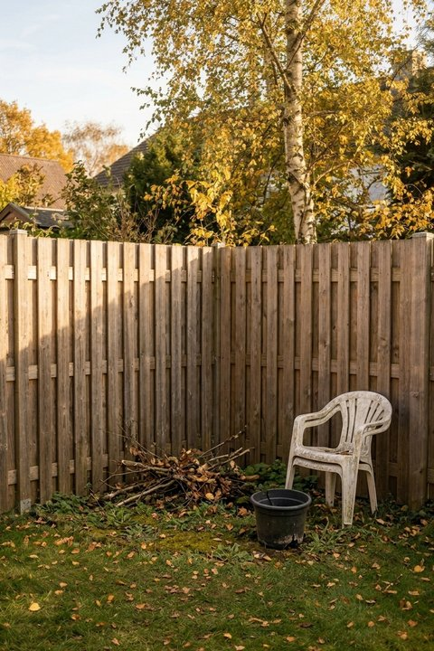
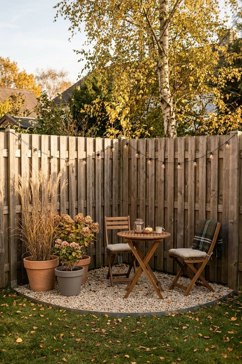

Kleine Gartenecke vorher/nachher: ein Sitzplatz aus Kies


In fast jedem Garten gibt es eine Ecke, in der nur Äste und Laub liegen. Ein runder Kiesplatz mit Tisch und zwei Stühlen macht daraus den Lieblingsplatz für den Feierabend – an einem Wochenende und ohne Fundament.
Zur Einkaufsliste & den Kosten ↓
Die 6 Schritte
1. Aufräumen
Äste, Laub und Unkraut entfernen. Äste kann man klein schneiden und unten ins Hochbeet geben.
0 €
2. Kreis abstecken und Rasen abtragen
Einen Kreis mit etwa 2,5 m Durchmesser mit Schnur und Stab markieren. Die Grasnarbe 5–8 cm tief abstechen.
0 €
3. Unkrautvlies und Rasenkante
Unkrautvlies auslegen und eine Rasenkante aus Metall rundherum einschlagen – sie hält Kies und Rasen sauber getrennt.
ca. 30–60 €
4. Kies einfüllen
Heller Kies (8–16 mm) etwa 5 cm hoch. Für 2,5 m Durchmesser braucht man rund 400 kg, also etwa 16 Säcke à 25 kg – oder lose vom Baustoffhandel, das ist günstiger.
ca. 50–100 €
5. Tisch, Stühle und Kübel
Ein kleiner runder Holztisch mit zwei Klappstühlen, dazu drei große Kübel mit Ziergräsern und einer Hortensie.
ca. 160–315 €
6. Licht
Eine Solar-Lichterkette am Zaun und eine Laterne auf dem Tisch – keine Kabel durch den Garten.
ca. 18–40 €
Einkaufsliste
| Was | Menge | ca. Preis |
|---|---|---|
| Unkrautvlies, ca. 6 m² | 1 | 10–20 € |
| Rasenkante Metall, ca. 8 m | 1 | 20–40 € |
| Kies 8–16 mm, ca. 400 kg | 1 | 50–100 € |
| Holztisch rund + 2 Klappstühle | 1 Set | 80–160 € |
| Sitzauflagen + Decke | 3 | 20–35 € |
| Große Kübel + Gräser/Hortensie | 3 | 60–120 € |
| Solar-Lichterkette + Laterne | 1+1 | 18–40 € |
Richtwerte für Deutschland, Stand November 2026. Die Preise schwanken je nach Händler und Saison.
Was kostet die Gartenecke?
Spar-Version – unter 200 €: Vlies, Kante, Kies und gebrauchte Klappmöbel.
Komplett wie auf dem Bild – ca. 260–515 €.
Tipp: Kies und Kante jetzt im Winter verlegen, Möbel und Pflanzen im Frühjahr dazukaufen.
Häufige Fragen
Wächst Unkraut durch den Kies?
Mit Unkrautvlies kaum. Einzelne Samen, die von oben anfliegen, lassen sich leicht herausziehen.
Geht das auch auf der Terrasse?
Ja, mit Teppich statt Kies: Terrasse vorher/nachher.